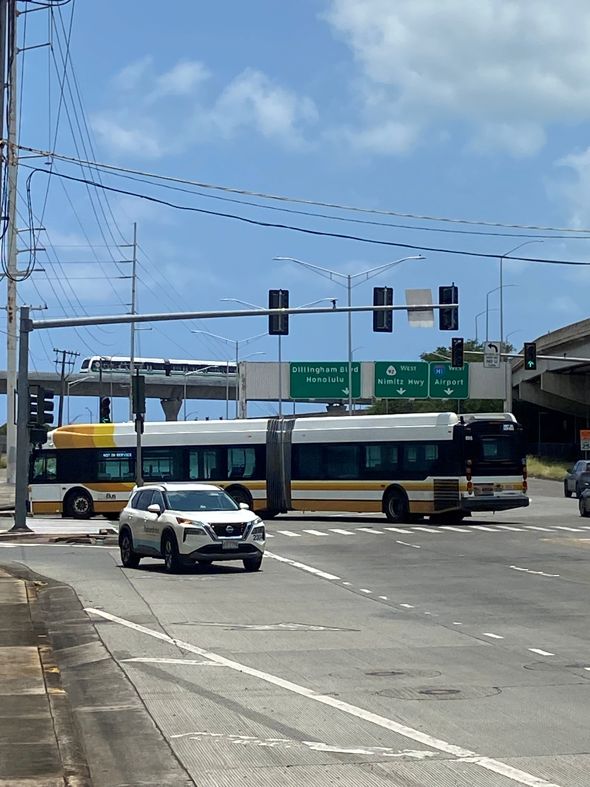

Middle Street
Place: Middle Street, Kalihi, Honolulu, Oʻahu
Type: Historic street / transportation corridor
Story it tells: A Kingdom-era road that became one of Honolulu's enduring transportation crossroads, carrying railroads, industry, buses, highways, and eventually Skyline through Kalihi.

Middle Street must be one of the most generic-sounding street names around. Its history is anything but. Running through lower Kalihi between North King Street and the industrial lands near Keʻehi Lagoon, the short roadway is surrounded today by freeway ramps, warehouses, government facilities, bus yards, and some of Honolulu's busiest transportation infrastructure. Yet Middle Street has sat at a transportation crossroads since the Hawaiian Kingdom, repeatedly adapting as the surrounding landscape changed from wetlands and agricultural lands to railroads, industry, highways, buses, and now rail (again).
The origin of the name itself is a bit of a mystery. No individual or agency is known to have given Middle Street its name. So it begs the real question: what is Middle Street in the middle of? The unsatisfying answer is that we don't know exactly. The road lies between Kalihi and Kahauiki Streams, within a landscape once crossed by paths connecting the uplands and coast, but whether either fact explains the name is unknown. What we do know is that Middle Street was already established by 1889, when construction of Benjamin Dillingham's Oʻahu Railway & Land Company crossed the road near Kamehameha Highway. This is among the earliest documentation of Middle Street we have found.
The railroad crossed near the lower end of the road as it continued toward ʻEwa. OR&L trains carried passengers, sugar, pineapples, livestock, military supplies, and other freight between Honolulu and communities across the western and northern portions of the island. Rail sidings and industrial facilities developed through the surrounding lowlands, helping transform the landscape.
Before railroads, warehouses, and pavement, Middle Street crossed lands associated with Kalihi and neighboring Kahauiki. Streams descending from the valleys supported irrigated agriculture, while the lower coastal plain transitioned into wetlands, fishponds, mudflats, and the shallow waters of Keʻehi Lagoon. Kalo and other crops were cultivated inland while coastal environments provided fish, limu, shellfish, and other resources. The heavily engineered landscape surrounding Middle Street today gives little indication of how wet and productive these lowlands once were.
By the early twentieth century, industrial Honolulu was spreading into lower Kalihi. Middle Street and the nearby railroad became surrounded by stockyards, slaughterhouses, warehouses, and food-processing operations. Livestock pens and meatpacking became particularly associated with the area, while rail spurs allowed goods to move between industrial properties and Honolulu's harbor and commercial districts.
Fort Shafter was established nearby in the early twentieth century, while Pearl Harbor developed into the principal American naval base in Hawaiʻi. Middle Street sat between Honolulu, the harbor, military installations, and the rapidly developing communities to the west. During World War II, the surrounding transportation network carried military personnel, civilian staff, equipment, and supplies.
After the war, automobiles replaced trains as the dominant form of transportation across Oʻahu. OR&L ended regular operations in 1947, but Middle Street did not lose its transportation purpose. New roads and eventually the H-1 Freeway reshaped the corridor. Freeway ramps, widened roadways, channelized waterways, and industrial development increasingly separated the surrounding neighborhoods from the wetlands and shoreline.
Public transportation soon gave Middle Street its contemporary identity. In 1971, Honolulu's newly created municipal bus system established its principal operating base in the area. What became Oʻahu Transit Services and TheBus grew around Middle Street, with administrative offices, maintenance facilities, and bus yards making the corridor one of the most important centers of public transportation on the island. TheHandi-Van and Kalihi Transit Center were later added to the same complex.
Middle Street also became familiar to generations of motorists for something less celebrated: the infamous Middle Street Merge and the traffic that came with it. Its location near the convergence of the H-1 Freeway, Nimitz Highway, Dillingham Boulevard, Kamehameha Highway, airport routes, and roads serving nearby military installations made the area one of Honolulu's major transportation bottlenecks.
In 2025, rail returned to Middle Street when the second operating segment of Honolulu's Skyline system opened. Kahauiki Station, officially known as Kahauiki (Middle Street–Kalihi Transit Center) Station, was constructed beside the existing bus facilities and connected to them by an elevated pedestrian bridge across Kamehameha Highway. The station became Skyline's eastern terminus and a major transfer point between trains and buses.
Rather than allowing the familiar modern name “Middle Street” to become the station's primary identity, the Hawaiian Station Naming Working Group restored the name of the historic ahupuaʻa. Middle Street and Kahauiki now exist beside one another: one preserving a road name documented since the Hawaiian Kingdom, the other returning an older Hawaiian land name to everyday use.
There is an unusual symmetry to Middle Street's transportation history. In 1889, a new railroad being built across Oʻahu encountered an already established Middle Street and crossed it on its journey west. More than 130 years later, another new railroad arrived at essentially the same transportation crossroads. Between those two rail eras came stockyards, warehouses, military traffic, freeways, TheBus, and TheHandi-Van.